In Reality RPG, the economy is not a shop menu. It is an active antagonist — a complex, shifting system that rewards the prepared and punishes the careless. Characters don't just "earn gold." They navigate credit scores, housing markets, career trajectories, retirement planning, and the occasional market crash that wipes out years of progress. This page provides the full mechanical toolkit for simulating real-world economic life.
The six attributes all matter here: VIG (physical stamina for gig work and trades), INT (financial literacy, investing, business planning), EXP (career advancement, negotiation), DXT (technical trades, e-commerce operations), RES (emotional endurance through financial stress), and PRC (attention to detail for budgeting, paperwork, compliance).
Money is stress. Running out of money generates Stress Points (SP) just like combat in a fantasy RPG. A character who loses their job, faces foreclosure, or maxes out credit cards does not simply "have less gold." They take SP damage, risk breakdowns, and may need to make desperate choices. Financial stress is narrative stress.
📈 1. The Economic Cycle
The broader economy is not static. It breathes — expanding, contracting, overheating, cooling — and every character feels it. The GM tracks the Economic Climate on a simple tracker that shifts every 3–6 months of in-game time (or whenever the GM wants to introduce drama).
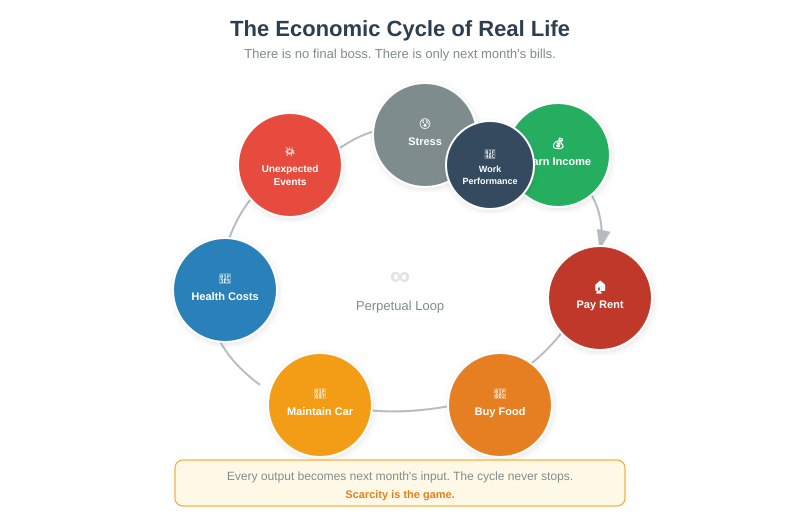
1.1 Economic Climate Tracker
The GM maintains a single number: the Economic Climate Score (ECS), ranging from −10 (Deep Depression) to +10 (Overheated Boom). It starts at 0 (Stable) and shifts by 1–3 per cycle event. Players can see the current ECS on the campaign board.
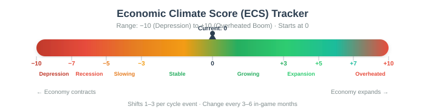
−8 to −10
12%+ unemp.
+4 TN jobs. Loans denied. 8+ = laid off.
−5 to −7
9–12% unemp.
+2 TN jobs/loans. 10+ = laid off.
−2 to −4
7–9% unemp.
+1 TN jobs/loans
−1 to +0
5–7% unemp.
No modifiers
+1 to +4
4–6% unemp.
No modifiers
+5 to +7
3–5% unemp.
TN −1 to interviews
+8 to +10
2–3% unemp.
TN −1 work, +2 loans. High inflation.
1.2 Inflation Mechanic
During Expansion or Overheated Boom phases, the GM applies an inflation rate to all prices each month. This is not abstract — it directly impacts character budgets.
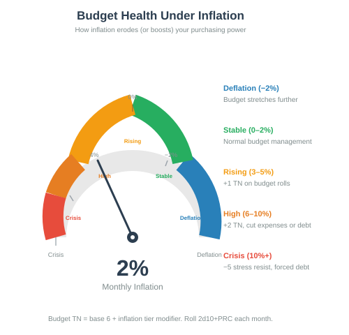
Each month, characters multiply their total budget by 1 + inflation_rate. If income does not keep pace, the character must cut expenses, dip into savings, or take on debt. Roll 2d10 + PRC mod vs TN 6 each month to manage a budget under inflation. Failure means overspending by 5–15% of the budget.
1.3 Recession Events
When ECS drops below −3, the GM introduces recession events. Roll 1d6 or choose narratively:
💥 Mass Layoff
All employed roll 2d10 + EXP mod vs TN 7. Failure = laid off. <6 EXP roll twice.
🔒 Credit Crunch
Loan TN +2 for 3 months. Credit card limits −20%. No new cards issued.
📉 Housing Market Dip
Home values drop 5–15%. Underwater mortgages possible. Foreclosure risk ↑ for high DTI.
✂️ Benefits Cut
SNAP/Unemployment delayed 2–4 weeks. +2 SP to affected characters.
🚚 Supply Chain Crisis
Grocery prices +15%. Gas spike. Essential goods unavailable. Budget TN +2.
🏦 Bank Failure / FDIC
Funds locked 2–4 weeks. +4 SP. Insurance covers up to $250k.
1.4 The GM's Economic Dashboard
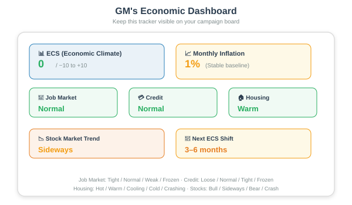
The GM should keep a simple tracker visible (or in notes) with these fields:
- ECS: Current score (−10 to +10)
- Inflation Rate: Monthly percentage
- Job Market: Tight / Normal / Weak / Frozen
- Credit Conditions: Loose / Normal / Tight / Frozen
- Housing Market: Hot / Warm / Cooling / Cold / Crashing
- Stock Market Trend: Bull / Sideways / Bear / Crash
Don't shift the ECS every month. Real economies move slowly. Change it every 3–6 in-game months, or when you want to introduce a major plot event. Sudden shifts (−3 or more in one cycle) are dramatic but should be rare — they represent financial crises, pandemics, or geopolitical shocks.
💳 2. Credit Scores
In the American financial system, your credit score is more powerful than your character's level. It determines whether you can rent an apartment, get a car loan, qualify for a mortgage, and in some cases, even whether you get hired. Reality RPG models the FICO score system (300–850).
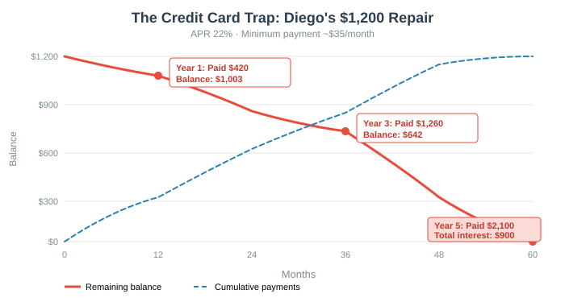
2.1 Credit Score Components
A character's credit score is determined by five factors, weighted as follows:
Payment History 35%
0–100 scale. 30+ days late = −10. 90+ days late = −25. Biggest impact on your score.
Amounts Owed 30%
0–100 scale. <30% utilization = good. >50% = bad. >80% = terrible. Score = 100 − (util × 1.5).
Length of History 15%
0–100 scale. Each year = +5, max 100. New credit = 0. Older accounts = better score.
New Credit 10%
0–100 scale. Each inquiry in 6 months = −5. Starts at 100. Too many new accounts hurts.
Credit Mix 10%
0–100 scale. 1 type = 40, 2 types = 60, 3+ types = 100. Revolving + installment + mortgage is ideal.
2.2 Calculating Credit Score
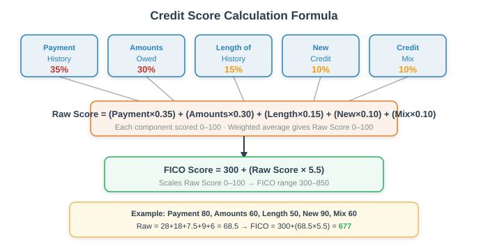
Weighted average of the five components, scaled to 300–850:
Raw Score = (Payment × 0.35) + (Amounts × 0.30) + (Length × 0.15) + (New × 0.10) + (Mix × 0.10)
FICO Score = 300 + (Raw Score × 5.5)
Example: A character with Payment 80, Amounts 60, Length 50, New 90, Mix 60 → Raw = 28 + 18 + 7.5 + 9 + 6 = 68.5 → FICO = 300 + (68.5 × 5.5) = 677
2.3 Credit Score Tiers and Effects
2.4 Credit Score Changes Over Time
Credit scores don't change dramatically overnight. Each month, the GM adjusts based on the character's financial behavior:
Pay bills on time
+3 to +8 · 1–2 months
Bill 30 days late
−30 to −60 · Immediate
Bill 90+ days late
−80 to −120 · Stays 7 years
Pay off card balance
+5 to +20 · 1 month
Open new credit card
−5 then +10 · 6 months
Auth user on parent's card
+20 to +50 · 1–2 months
File bankruptcy
−150 to −250 · Stays 7–10 yrs
Successful dispute
+10 to +30 · 30–45 days
2.5 Credit Score Checks
Characters can take actions to improve their credit. Each action requires a check:
- Dispute an error on credit report: 2d10 + PRC mod vs TN 7. Success removes the negative item. Failure: the bureau denies the dispute.
- Negotiate with a collection agency: 2d10 + EXP mod vs TN 8. Success: debt reduced by 30–50%. Failure: agency escalates to legal action.
- Apply for a credit-builder loan: 2d10 + INT mod vs TN 5. Success: loan approved; builds credit over 12 months (+20 score).
- Convince landlord to waive credit check: 2d10 + EXP mod vs TN 9. Success: apartment available. Failure: denied; may need co-signer or double deposit.
Marcus (INT 8, EXP 10, PRC 7) has a credit score of 540 after a medical debt sent him to collections. His advisor sets a campaign arc: raise score above 680 in 18 months to qualify for a mortgage.
Month 1: Marcus disputes the medical debt (PRC check: 2d10 rolls 7+4 = 11, +1 PRC mod = 12 vs TN 7 ✅). The debt is flagged as disputed. Score: 555.
Month 2: Marcus opens a secured credit card ($200 deposit) and uses it for gas, paying it off monthly. Utilization stays below 10%. Score: 570.
Month 3: Marcus negotiates with the collection agency (EXP check: 2d10 rolls 3+6 = 9, +2 EXP mod = 11 vs TN 8 ✅). They agree to 40% settlement. He pays $600 of a $1,500 debt. Score: 590.
Months 4–12: Consistent on-time payments, low utilization. Score climbs ~10/month to 680 by month 12. Milestone achieved 6 months ahead of schedule.
🏠 3. Housing Market
Where you live is one of the most consequential financial decisions a character makes. The housing market is volatile, emotionally charged, and mechanically complex. Characters must choose between renting, buying, or living with roommates/family — each with trade-offs.
3.1 Rent vs. Buy Decision
The GM determines local housing costs based on the city's cost of living tier. Characters must decide: rent or buy?
Lenders use the debt-to-income (DTI) ratio to determine mortgage qualification. Your total monthly debt payments (mortgage + car + student loans + credit cards) should not exceed 36% of your gross monthly income. Your housing payment alone should not exceed 28%. If DTI > 36%, the mortgage is denied unless the character has exceptional credit (750+) or a 20%+ down payment.
3.2 Mortgage Qualification
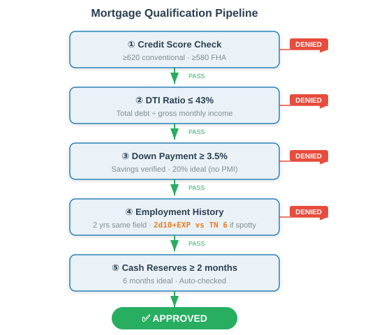
Credit Score
Min: 620 conv / 580 FHA · Ideal: 740+ · Auto-checked
DTI Ratio
Min: ≤43% · Ideal: ≤36% · Calculated from income + debts
Down Payment
Min: 3–3.5% · Ideal: 20% · Savings verified
Employment History
Min: 2 yrs same field · Ideal: 5+ yrs · 2d10+EXP vs TN 6 if spotty
Cash Reserves
Min: 2 months payments · Ideal: 6 months · Auto-checked
3.3 Home Appreciation / Depreciation
Every 6 months, the GM adjusts home values based on the ECS:
+8 to +10
+8–15%
Roll: 2d10÷2+8
+5 to +7
+3–8%
Roll: 2d10÷2+3
−1 to +4
±1–3%
Roll: 2d10÷2−4
−5 to −7
−3 to −8%
Roll: 2d10÷2+3
−8 to −10
−8 to −20%
Roll: 2d10+8
3.4 Foreclosure Mechanics
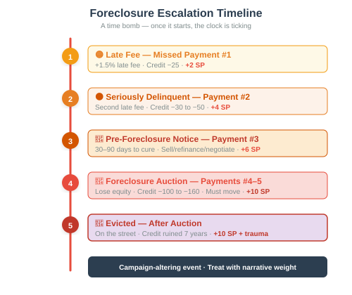
If a homeowner misses mortgage payments, foreclosure begins. This is a time bomb — once it starts, the clock is ticking.
1 missed
−25 credit
+2 SP
2 missed
−30–50 credit
+4 SP
3 missed
30–90 days to cure
+6 SP
4–5 missed
−100–160 credit
+10 SP
After
Credit ruined 7 yrs
+10 SP
A foreclosure stays on a character's credit report for 7 years. During that time, they cannot qualify for a conventional mortgage. FHA loans may be available after 3 years. This is a campaign-altering event. Treat it with narrative weight — characters who go through foreclosure should be changed by it.
3.5 First-Time Homebuyer Programs
Characters may qualify for assistance programs that lower the barrier to homeownership:
- FHA Loans: 3.5% down, credit score 580+. Higher mortgage insurance premium (MIP).
- VA Loans: 0% down for veterans. No mortgage insurance. Credit score 620+ typically required.
- FHA 203(k) Rehab Loans: Finance purchase + renovation together. Great for fixer-uppers.
- Down Payment Assistance (DPA): State/local programs. Grants or forgivable loans for down payment.
The Chen family (combined income $95,000/year) has been renting a 2-bedroom for $1,800/month in a Growing market (ECS +3). They've saved $40,000 for a down payment. They find a $280,000 house.
DTI Check: Monthly mortgage (PITI) ≈ $1,650. Car payment: $350. Student loans: $280. Total debt: $2,280. Gross monthly income: $7,917. DTI = 28.9%. ✅ Under 36%.
Credit Check: Both parents have scores of 720. ✅ Good tier.
Down Payment: $40,000 on $280,000 = 14.3%. Below 20%, so PMI applies (~$80/month extra).
Mortgage Application: The GM calls for an EXP check to verify stable employment (2d10 + EXP mod vs TN 6). Father rolls 8+5 = 13, +1 EXP mod = 14. ✅ Approved.
Result: The Chens become homeowners. They now have a $240,000 mortgage at 6.5% with PMI. They save $150/month vs. renting, but now have property taxes, insurance, and maintenance costs. Net savings: ~$50/month, but they're building equity.
💰 4. Investing and Wealth Building
Investing is how characters build long-term wealth beyond their salary. In Reality RPG, investing is a skill-based activity — characters with higher INT and EXP make better decisions. But luck matters too, because markets are unpredictable.
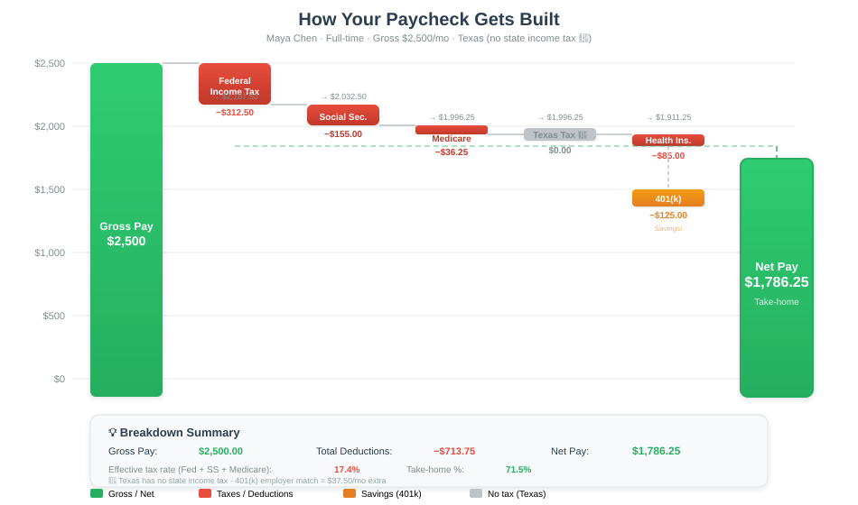
4.1 Investment Types
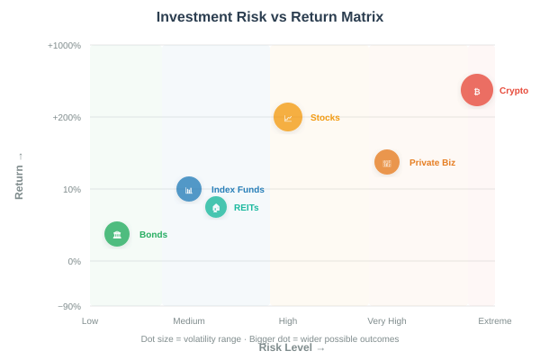
Index Funds (S&P 500)
Risk: Medium · Return: 7–10%/yr · TN 5 · Liquidity: High
Individual Stocks
Risk: High · Return: −50% to +200% · TN 8 · Liquidity: High
Bonds (Treasury)
Risk: Low · Return: 2–5%/yr · TN 4 · Liquidity: Medium
Real Estate (REITs)
Risk: Medium · Return: 5–8% + div · TN 6 · Liquidity: Medium
Crypto
Risk: Extreme · Return: −90% to +1000% · TN 10 · Liquidity: High
Private Business
Risk: Very High · Return: Wildly varies · TN 10+ · Liquidity: Very Low
4.2 Investment Checks
When a character makes an investment decision, the GM calls for a check:
2d10 + INT mod + EXP mod vs TN (see table above). Success means the investment performs at or above average. Failure means below-average returns. Critical failure (roll 1–2 on both dice) means a catastrophic loss: the character picked the wrong stock, the crypto scam, or the Ponzi scheme. Lose 30–100% of the invested amount.
4.3 Retirement Accounts
Characters should contribute to retirement accounts. The mechanics:
- 401(k): Pre-tax contributions. Employer often matches 50–100% up to 3–6% of salary. Free money — always max the match.
- Traditional IRA: Pre-tax contributions up to $6,500/year ($7,500 if 50+). Deductible if income below threshold.
- Roth IRA: After-tax contributions. Tax-free withdrawals in retirement. Income limits apply (~$145k single, ~$230k married).
4.4 Compound Interest Mechanic
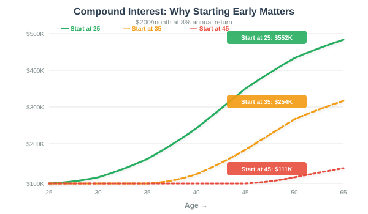
For every year of in-game time, invested money grows by the market return rate. The GM can use a simplified formula:
Future Value = Principal × (1 + rate)years
Example: $10,000 invested at 8% for 10 years = $10,000 × 2.16 = $21,589. For 30 years = $10,000 × 10.06 = $100,627. This is why starting early matters enormously.
4.5 Risk Tolerance
Characters have a Risk Tolerance score based on their RES and life circumstances:
4.6 Market Crash Events
When the stock market trend shifts to "Crash" (ECS ≤ −7), all invested characters feel it:
- Index fund investors lose 15–30% of portfolio value. Painful but recoverable in 3–7 years.
- Individual stock investors lose 30–70%. Characters who invested in individual stocks roll 2d10 + INT mod vs TN 8 to determine their specific loss.
- Crypto investors lose 50–90%. 2d10 vs TN 12 to avoid total loss.
- Bond holders lose 0–10%. Government bonds may even gain value.
The GM announces a market crash (ECS drops from +3 to −6). Three characters are affected:
Aisha (INT 12, EXP 9) has $80,000 in an S&P 500 index fund. She loses 22% = $17,600. Her portfolio is now $62,400. She takes +3 SP from the stress of watching her retirement shrink, but she stays the course. In 5 years, it recovers to $110,000.
Carlos (INT 7, EXP 6) has $25,000 in individual tech stocks. He rolls 2d10 for his loss: 4+7 = 11, +0 INT mod = 11 vs TN 8. ✅ He diversified enough to limit losses to 35% = $8,750. Portfolio: $16,250.
Derek (INT 5, RES 14) put $15,000 into a crypto called "MoonDog Coin." He rolls 2d10 vs TN 12: 2+1 = 3. ❌ Critical failure. MoonDog Coin was a rug pull. Derek loses everything. +6 SP. Derek is now $15,000 poorer and questioning all life choices.
⚖️ 5. Wealth Inequality
Not all characters start equal. In Reality RPG, starting wealth (determined during character creation by socioeconomic background) has a massive, lasting impact on a character's trajectory. This is not a game mechanic to "balance" — it is a feature of the simulation.
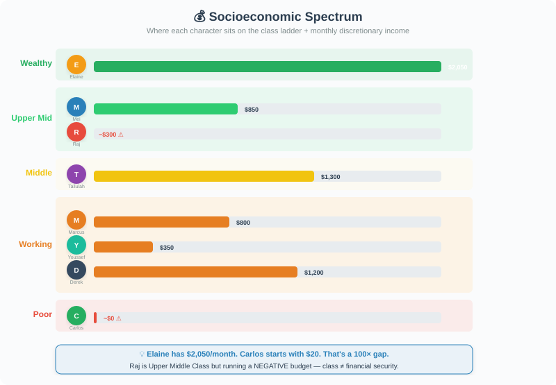
5.1 Starting Wealth Tiers
$0–$200
No assets/debt
No safety net
Credit: 300–550
$200–$1K
Old car, basics
1 mo savings
Credit: 550–650
$1K–$5K
Reliable car
2–3 mo buffer
Credit: 650–700
$5K–$20K
Good car/home
3–6 mo buffer
Credit: 700–750
$20K–$100K
Home + invest
6–12 mo buffer
Credit: 750–800
$100K+
Multi-property
Family net
Credit: 800+
5.2 The Wealth Gap Mechanic
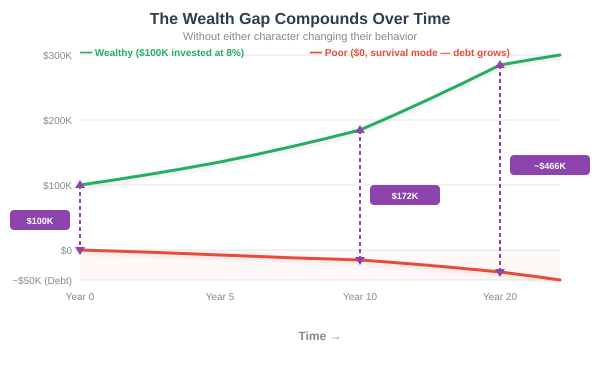
Each year of in-game time, the gap between wealthy and poor characters compounds. Wealthy characters earn returns on investments, get better loan terms, and have family safety nets. Poor characters spend all income on survival, pay higher interest rates, and have no buffer against emergencies.
The Math: A wealthy character with $100,000 invested at 8% earns $8,000/year without working. A poor character earning $30,000/year needs every dollar for survival and cannot invest. After 10 years, the wealthy character has $216,000 (passive income: $17,280/year), while the poor character has $0 and may be in debt. The gap went from $100,000 to $216,000+ — without either character changing their behavior.
5.3 Emergency Fund Impact
When an emergency strikes (car repair, medical bill, job loss), the character's wealth tier determines their response:
5.4 Generational Wealth Transfer
Characters from wealthy families may receive:
- College tuition paid: Saves $50,000–$200,000 in student loans
- Down payment assistance: $50,000–$200,000 toward first home
- Business seed money: $25,000–$500,000 to start a venture
- Inheritance: $100,000 to unlimited, depending on family wealth
Characters from poor families may inherited debt — caring for aging parents, paying their medical bills, or co-signing loans that go bad.
Wealth inequality is not a "challenge" to overcome. It is a structural reality. Characters from poor backgrounds should not be expected to "grind their way out" through dice rolls alone. The game should acknowledge that systemic factors matter. A character born into poverty faces a fundamentally different game than one born into wealth — and that is the point.
🏚️ 6. Bankruptcy and Financial Recovery
Bankruptcy is the financial equivalent of dying and respawning with half your gear. It is devastating, stigmatized, and can take years to recover from. But sometimes it's the only way to survive.
6.1 When Bankruptcy Happens
Characters file bankruptcy when their debts are insurmountable. Common triggers:
- Catastrophic medical bills not covered by insurance
- Job loss + depleted savings + maxed credit cards
- Divorce with asset division and debt splitting
- Business failure with personal guarantees
- Foreclosure that leaves a deficiency judgment
6.2 Chapter 7 vs. Chapter 13
Chapter 7 — Liquidation
Process: Sell non-exempt assets, discharge remaining debt
Income: Must pass means test (below median)
Home: Lose if equity > exemption ($20k–$150k)
Car: Lose if value > exemption
Duration: 3–6 months to discharge
Credit: −150 to −250 pts · 10 years on report
SP: +8 to +12 · 2d10+INT vs TN 7
Chapter 13 — Reorganization
Process: 3–5 year repayment plan, then discharge
Income: Must have regular income to fund plan
Home: Keep if you can make plan payments
Car: Keep if included in plan
Duration: 36–60 months of payments
Credit: −100 to −200 pts · 7 years on report
SP: +5 to +8 · 2d10+INT+PRC vs TN 8
6.3 The Emotional Toll
Bankruptcy is not just financial. It is devastating emotionally:
- Immediate SP: Filing generates +8 to +12 SP. Characters must roll 2d10 + RES mod vs TN 10 to resist a breakdown. Failure = breakdown event (see Mental Health page).
- Ongoing SP: During the bankruptcy process, characters take +2 SP per month from the stress of financial restructuring, court appearances, and social stigma.
- Social impact: Friends and family may distance themselves. Relationships strain. EXP checks for social interactions suffer a −2 penalty for 6 months.
6.4 Recovery Timeline
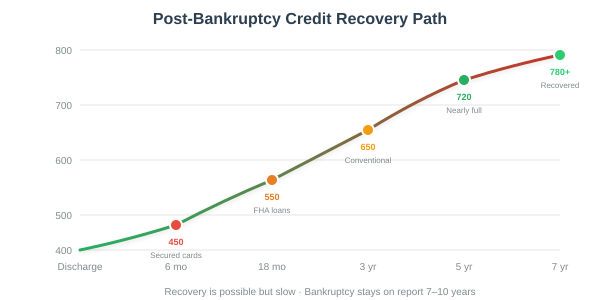
300–450
Secured cards only
PRC vs TN 8
450–550
Subprime cards/loans
INT vs TN 7
550–650
FHA mortgages
EXP vs TN 6
650–720
Conventional loans
INT vs TN 5
720–780
Nearly full recovery
Normal checks
780+
Fully recovered
Falls off report
Sarah (INT 9, RES 11, PRC 8, EXP 7) was a working-class character who lost her job during a recession. Her savings ran out in 3 months. She maxed 3 credit cards on rent and groceries. Total debt: $42,000. She has no assets other than a $12,000 car.
Month 0: Sarah files Chapter 7. She rolls 2d10 + INT mod vs TN 7: 6+5 = 11, +0 mod = 11. ✅ The filing proceeds smoothly. +10 SP. She rolls 2d10 + RES mod vs TN 10 to resist breakdown: 3+4 = 7, +1 mod = 8. ❌ She breaks down — a panic attack that sends her to urgent care. +3 more SP. She's at critical stress.
Months 1–6: Sarah gets a secured credit card ($200 deposit). She uses it for one purchase per month and pays it off. PRC check each month (2d10 + PRC mod vs TN 8) to maintain budgeting discipline. She succeeds 4 of 6 months. Credit score: 420 → 480.
Months 7–24: Sarah gets a new job (lower pay but stable). She opens a savings account, builds a $1,000 emergency fund. Credit score: 480 → 610. She qualifies for a subprime auto loan to replace her aging car.
Months 25–48: Steady progress. Sarah avoids new debt, pays everything on time, keeps utilization below 20%. By month 48, her credit score is 710. She's nearly fully recovered — but she carries the emotional scar forever. +2 permanent SP that she can never fully recover (a "trauma marker").
🏪 7. Entrepreneurship and Small Business
Starting a business is one of the highest-risk, highest-reward activities in Reality RPG. Most small businesses fail within 5 years (about 20% in year 1, 50% by year 5). But for characters willing to roll the dice, entrepreneurship offers income potential far beyond a salary.
7.1 Starting a Business: The Checklist
Before a business can open, the character must complete these steps:
Business Plan
2d10+INT vs TN 7 · $0–$5K · 1–3 months
Legal Formation (LLC)
2d10+PRC vs TN 6 · $100–$800 · 2–4 weeks
Licenses & Permits
2d10+PRC vs TN 7 · $200–$5K · 1–6 months
Business Bank Account
No check · $0–$30/mo · 1 day
Startup Capital
2d10+EXP vs TN 8 for loan · $500–$500K+ · Varies
Location/Setup
2d10+EXP vs TN 7 · $0–$50K+ · 1–3 months
Marketing Launch
2d10+EXP vs TN 7 · $500–$20K · 1–2 months
7.2 Monthly Business Operations
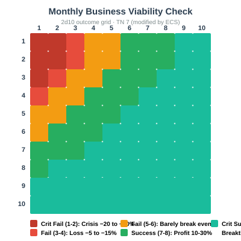
Each month, the GM calls for a Business Viability Check:
2d10 + INT mod + EXP mod vs TN 7 (TN modified by ECS: −2 during boom, +2 during recession).
Success: Business covers costs and generates profit. Profit = 10–30% of revenue.
Failure: Business barely breaks even or loses money. Loss = 5–15% of monthly expenses.
Critical Success (roll 9+ on both dice): Breakthrough month! Revenue doubles. Possible viral moment, big client, or expansion opportunity.
Critical Failure (roll 1–2 on both dice): Crisis month. Lawsuit, supplier failure, or PR disaster. Loss = 20–50% of monthly expenses. +4 SP.
7.3 Side Hustle Mechanics
Characters can run side hustles alongside their main job. Side hustles are lower-stakes but also lower-reward:
E-commerce
Startup: $500–$5K · Earn: $200–$3K/mo · 10–20 hrs/wk · DXT vs TN 6
Food Truck
Startup: $50K–$150K · Earn: $3K–$10K/mo · 40+ hrs/wk · EXP vs TN 8
Consulting/Freelance
Startup: $0–$500 · Earn: $1K–$8K/mo · 10–30 hrs/wk · INT+EXP vs TN 6
Airbnb / Prop. Mgmt
Startup: $0–$10K · Earn: $500–$5K/mo · 5–15 hrs/wk · PRC vs TN 7
Handyman Services
Startup: $200–$2K · Earn: $800–$4K/mo · 15–30 hrs/wk · DXT vs TN 5
Tutoring
Startup: $0 · Earn: $300–$1.5K/mo · 5–15 hrs/wk · INT vs TN 4
7.4 Hiring Employees
When a business grows, the owner may hire employees. This introduces new complexity:
- Payroll taxes: ~7.65% employer FICA + unemployment tax (~1–6%)
- Workers' comp insurance: $50–$500/month per employee
- Benefits: Health insurance, PTO, retirement matching (if offered)
- Hiring check: 2d10 + EXP mod vs TN 7 to hire competent employees. Failure = hire a problem employee (low productivity, attitude issues, or even theft).
7.5 Taxes
Business owners pay self-employment tax (15.3% on net earnings) plus income tax. The GM can simplify:
Total Tax Rate ≈ 25–40% of net profit (depending on income bracket and deductions). Characters must set aside this money each month. 2d10 + INT mod vs TN 50 each quarter to file taxes correctly. Failure = penalties (5–25% of unpaid taxes) or audit risk. Finance skill ≥ +1 grants +5.
Jamal (INT 13, EXP 11, PRC 8) has been a software developer for 8 years. He wants to start a consulting business helping small companies with cybersecurity.
Business Plan: 2d10 + INT mod: 7+6 = 13, +2 mod = 15 vs TN 7. ✅ Strong plan. He identifies a clear market gap.
Legal Formation: LLC filing. 2d10 + PRC mod: 5+8 = 13, +1 mod = 14 vs TN 6. ✅ Smooth process. $500 filing fee.
Startup Capital: Jamal has $15,000 saved. He needs $3,000 for website, insurance, and 3 months of runway. No loan needed.
Marketing Launch: 2d10 + EXP mod: 6+9 = 15, +2 mod = 17 vs TN 7. ✅ Excellent launch. He lands 2 clients in the first month.
Month 1: Revenue: $4,000. Expenses: $800 (insurance, software, website). Net profit: $3,200. After taxes (~30%): $2,240 take-home. Not bad for a side hustle!
Month 6: Jamal has 5 clients. Revenue: $12,000/month. He quits his job. Business viability check: 2d10 + INT mod + EXP mod: 8+7 = 15, +4 mod = 19 vs TN 7. ✅✅ Critical success — a Fortune 500 company hires him for a $50,000 contract.
🪜 8. Career Ladders
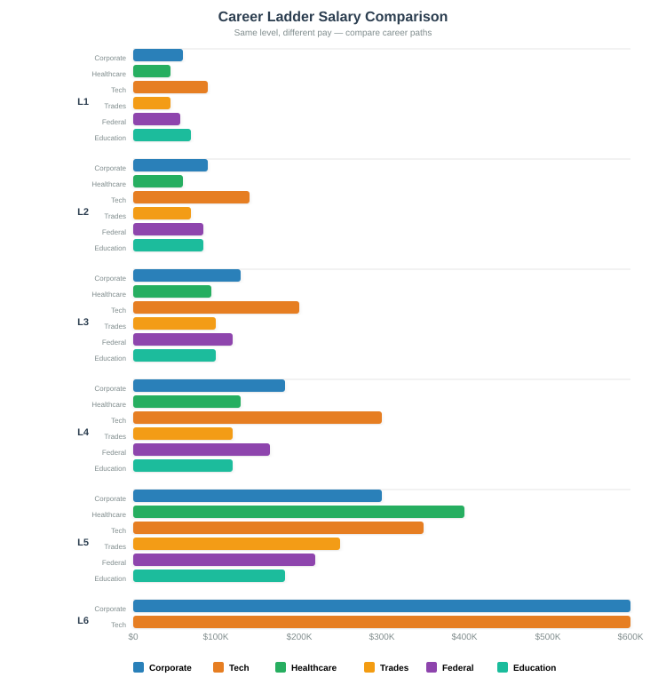
Career advancement is one of the primary ways characters increase their income and quality of life. Each profession has a defined career ladder with promotion requirements, salary ranges, and advancement checks.
8.1 General Promotion Rules
Every 1–2 years of in-game time, characters can attempt to advance on their career ladder. The check is:
2d10 + EXP mod + relevant attribute mod vs TN (see each ladder for TN).
Success: Promoted to next level. Salary increases by 10–30%.
Failure: Stay at current level. May need to gain more experience, skills, or connections.
Critical Success: Fast-tracked promotion. Salary increase 20–50%. Possible bonus or stock options.
Critical Failure: Passed over for promotion. May face workplace tension. +2 SP from frustration.
8.2 Corporate Ladder
8.3 Healthcare Ladder
8.4 Tech Industry Ladder
8.5 Education Ladder
8.6 Trades Ladder
8.7 Federal Government Ladder (GS System)
Don't let careers be boring. Introduce events: office politics, mergers that eliminate positions, mentorship opportunities, whistleblower dilemmas, performance reviews that go sideways, and the constant tension between career ambition and work-life balance. A character who reaches C-suite may have sacrificed relationships, health, and joy along the way.
✊ 9. Unions and Labor
Union membership is one of the most powerful economic tools available to working-class characters. Unions negotiate better wages, benefits, and working conditions — but organizing is dangerous, and striking is risky.
9.1 Union Membership Benefits
Wages
Non-union: Market rate · Union: +15–30% above market
Health Insurance
Non-union: Employer or ACA · Union: Negotiated comprehensive plan
Job Security
Non-union: At-will · Union: Just-cause termination only
Grievance Process
Non-union: Complain to HR · Union: Formal protected procedure
Training
Non-union: Minimal · Union: Apprenticeship + continuing ed
Dues
Cost: 1–2% of salary · Worth it for the wage premium alone
9.2 Workplace Organizing
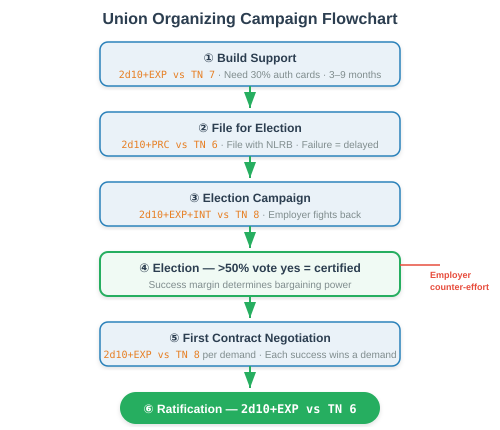
Characters can attempt to organize their workplace into a union. This is a multi-step campaign arc:
- Build Support: 2d10 + EXP mod vs TN 7 per month. Need 30% of workers to sign authorization cards. Takes 3–9 months.
- File for Election: 2d10 + PRC mod vs TN 6 to file correctly with NLRB. Failure = delayed election.
- Election Campaign: 2d10 + EXP mod + INT mod vs TN 8. Employer will fight back (anti-union meetings, threats, promises). Each month, roll vs employer's counter-effort.
- Election: If >50% vote yes, union is certified. Success margin determines bargaining power.
- First Contract Negotiation: 2d10 + EXP mod vs TN 8 per demand. Each success wins a demand (wage increase, benefits, etc.).
- Ratification: Union members vote on the contract. 2d10 + EXP mod vs TN 6 to get enough support.
9.3 Strikes
A strike is the nuclear option. Workers walk off the job, costing the employer money and the workers income. Strikes are high-risk:
Strike Duration
Each week = lost wages. No savings = +2 SP/week
Strike Fund
Union provides $100–$500/wk. Covers basics, not full income.
Employer Response
GM rolls 2d10/wk · 7+: holds firm · 8+: hires scabs · 9+: permanent replacement
Public Opinion
2d10+EXP vs TN 7 · Success: media sympathy · Failure: public turns
Resolution
2d10+EXP vs TN 8 after wk 4 · Success: contract · Crit fail: union loses
In "right-to-work" states, employers can permanently replace striking workers. Even in union states, a long strike can bankrupt individual workers. Characters who strike should understand: they are risking their livelihood. This is not a casual choice. Characters without savings or with dependents may be unable to strike even if they want to.
Maria (EXP 12, INT 8, RES 10) is a warehouse worker earning $18/hour. Her employer cut health benefits and refused to negotiate on overtime. Maria organizes:
Step 1 (Months 1–4): Maria builds support among 200 workers. She makes 4 EXP checks (TN 7), succeeding on 3. She gets 65 authorization cards — enough to file.
Step 2: PRC check to file with NLRB: 2d10 rolls 5+6 = 11, +0 PRC mod = 11 vs TN 6. ✅ Filed.
Step 3: The employer holds anti-union meetings. Maria's election campaign check: 2d10 rolls 8+7 = 15, +2 EXP + 0 INT = 17 vs TN 8. ✅✅ Strong showing. Union wins election 68% to 32%.
Step 5: First contract negotiations. The employer refuses to budge on health benefits. Maria calls a strike. Week 1: No strike fund. Maria has $3,000 savings. She takes +2 SP each week. By week 3, she's at critical stress but holds firm.
Week 5: Public opinion check: 2d10 rolls 9+8 = 17, +2 = 19 vs TN 7. ✅✅ Media coverage sways public opinion. A local politician intervenes. The employer agrees to negotiate.
Result: Contract won. $22/hour, restored health benefits, overtime protections. Maria's campaign is celebrated — but she lost $4,500 in wages, gained 10 SP, and her savings are depleted. The victory was real, but the cost was real too.
🤖 10. AI and Automation
Artificial intelligence and automation are actively reshaping the labor market. Characters in certain professions face a genuine risk of displacement. This is not hypothetical — it is happening now.
10.1 Job Risk Assessment
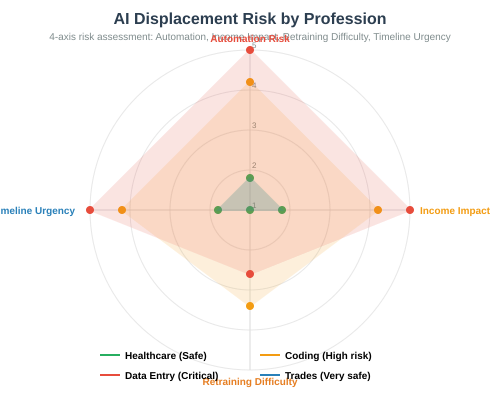
Each profession has an AI Risk Score from 1 (safe) to 10 (extremely vulnerable):
10.2 AI Displacement Events
When the GM introduces AI disruption, characters in at-risk professions must respond:
Characters in high/critical risk professions roll 2d10 + INT mod + EXP mod vs TN 8 every 6 months during an AI disruption period. Failure means the character's role is being automated. They have 3 months to retrain, find a new role, or face layoffs. Success means they've adapted their role to work alongside AI rather than be replaced by it.
10.3 Retraining Mechanics
Characters displaced by AI can attempt to retrain for a safer profession:
Online Course / Bootcamp
INT vs TN 6 · 3–6 mo · $500–$15K · Gain new skills for new ladder
Degree Program
INT vs TN 7 · 2–4 yrs · $10K–$100K+ · Full career change; student debt likely
Apprenticeship (Trades)
DXT vs TN 5 · 3–5 yrs · $0–$5K · AI-resistant; earn while learning
Career Coaching
EXP vs TN 6 · 1–3 mo · $500–$5K · Transfer existing skills to new field
Retraining is expensive and time-consuming. Characters who lose their job to AI may not have the money, time, or energy to retrain — especially those with dependents or health issues. This creates a vicious cycle: older workers (35+) are most likely to have accumulated career expertise that becomes obsolete, but least likely to have the resources to retrain. This is a structural narrative challenge, not just a mechanical one.
📱 11. Gig Economy
The gig economy offers flexibility but at a steep cost: no benefits, no job security, no paid time off, and income that fluctuates wildly. Characters who rely on gig work face a fundamentally different financial reality than salaried employees.
11.1 Gig Work Options
Ride-share (Uber/Lyft)
$15–$25/hr · 10–20 hrs/wk · Needs car · VIG: fatigue
Food Delivery
$12–$20/hr · 10–25 hrs/wk · Car or bike · VIG: fatigue
Package Delivery
$18–$25/hr · 5–15 hrs/wk · Car/SUV · VIG: heavy lifting
TaskRabbit / Handyman
$25–$50/hr · 5–15 hrs/wk · No vehicle · VIG: physical
Freelance (Upwork)
$20–$100+/hr · 5–30 hrs/wk · No vehicle · No VIG check
Cleaning Services
$20–$35/hr · 10–20 hrs/wk · Needs vehicle · VIG: physical
11.2 Income Volatility
Gig income is not guaranteed. Each month, the GM determines actual earnings:
Each month, roll 2d10 + EXP mod vs TN 6.
Success: Earn expected income (see table above).
Failure: Earn 50–75% of expected income (slow week, bad tips, platform algorithm changes).
Critical Success: Earn 125–150% (busy season, good tips, surge pricing).
Critical Failure: Earn 0–25% (suspended account, illness, weather, car breakdown).
11.3 Hidden Costs of Gig Work
Gig workers bear costs that employees don't:
- 🚗 Vehicle expenses: Gas, maintenance, depreciation. ~$0.65/mile for cars. A gig driver logging 1,000 miles/month spends $650 just on driving costs.
- 📱 Phone/data costs: $50–$100/month for reliable data
- 🏥 No health insurance: Must buy ACA plan ($200–$500/month) or go without
- 📋 Self-employment tax: 15.3% on all gig income
- 🏖️ No PTO: Sick day = no pay. Vacation = no pay.
- 🏦 No retirement matching: Must self-fund entirely
11.4 Gig Stacking

Many characters work multiple gigs simultaneously to make ends meet. This is called "gig stacking" and it has mechanical consequences:
For each additional gig beyond the first, the character takes a −1 penalty to all gig income checks and a +1 SP per month from burnout. At 3+ stacked gigs, the character must also roll 2d10 + VIG mod + RES mod vs TN 8 each month to avoid physical/emotional exhaustion. Failure = forced rest (no gig income for 1 week) or health event.
Kevin (VIG 8, INT 7, EXP 9, RES 6) works a full-time warehouse job ($35,000/year) but it's not enough to cover rent and student loans. He stacks 3 gigs:
Gig 1 — Uber (15 hrs/week): Expected $300/week = $1,200/month. But with the stacking penalty (−2 to checks), his income check fails 40% of the time. Average actual income: ~$800/month. After gas and wear: ~$500 net.
Gig 2 — DoorDash (10 hrs/week): Expected $200/week = $800/month. Same penalty. Average actual: ~$550/month. After gas: ~$350 net.
Gig 3 — TaskRabbit (5 hrs/week): Expected $100/week = $400/month. Average actual: ~$300/month. Minimal expenses: ~$280 net.
Total gig income: ~$1,130/month. Sounds good — but Kevin also takes +2 SP/month from burnout. His VIG+RES exhaustion check: 2d10 rolls 4+3 = 7, −1 VIG −2 RES = 4 vs TN 8. ❌ He fails in month 3. He gets a severe back injury from lifting on TaskRabbit. No workers' comp (he's an independent contractor). Medical bill: $3,000. He can't gig for 2 weeks. Net loss: $700 in wages + $3,000 medical = $3,700 hit.
This is the gig economy in a nutshell: the math barely works, and one bad day can wipe out months of effort.
🔗 Cross-Cutting Mechanics
Financial Stress and SP
Financial hardship generates Stress Points just like physical danger in a combat RPG. The following events generate SP:
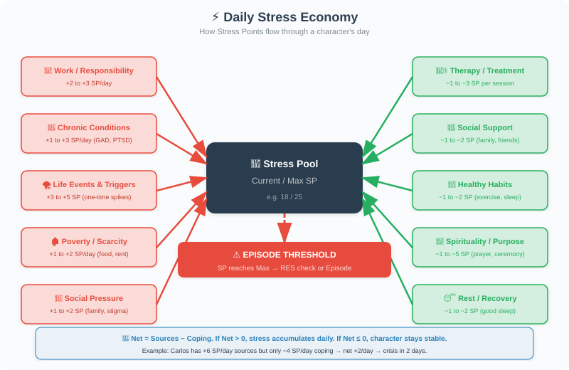
Characters recover from financial stress through financial stability. Each month where the character meets all expenses without going into debt, they recover 1–2 SP. Characters with 3+ months of emergency savings recover 2–3 SP/month. Characters in debt recover 0 SP from financial stress — the stress is ongoing.
Long-Term Financial Campaign Arcs
Financial stories make excellent campaign arcs. The GM can set financial milestones that characters work toward:
- "Pay off all credit card debt" — 6–24 month arc. Each month: 2d10 + PRC mod vs TN 7 to stay on budget.
- "Buy a home" — 12–36 month arc. Build savings, improve credit, qualify for mortgage.
- "Start a business" — 6–18 month arc. See Section 7.
- "Retire early" — Multi-year arc. Invest consistently, hit portfolio targets.
- "Rebuild from bankruptcy" — 3–7 year arc. See Section 6.
- "Organize a union" — 6–18 month arc. See Section 9.
- "Escape the gig economy" — 6–12 month arc. Build skills, land stable employment.
The economy is not a spreadsheet. It's a story engine. A character's financial situation should drive narrative choices: Do they take the lower-paying job with better work-life balance? Do they help a family member in crisis and deplete their savings? Do they invest in a risky opportunity that could change their life or ruin them? Money decisions are character decisions.